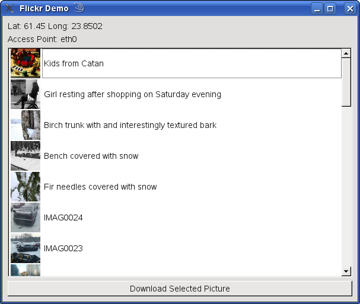

|
Home · All Classes · All Functions · | |
Files:
The Flickr Demo example displays a list of flickr images relating to the current location of the device, or a hard-coded location if there is no GPS source.

| Copyright © 2010 Nokia Corporation and/or its subsidiary(-ies) | Trademarks | Qt Mobility Project 1.1.0 |